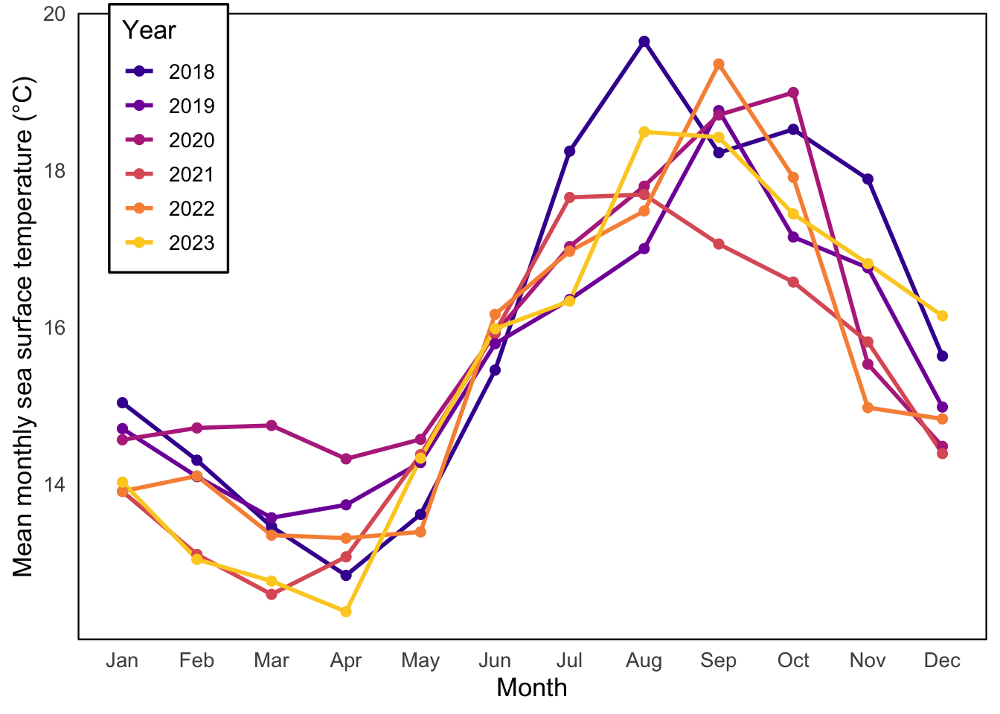
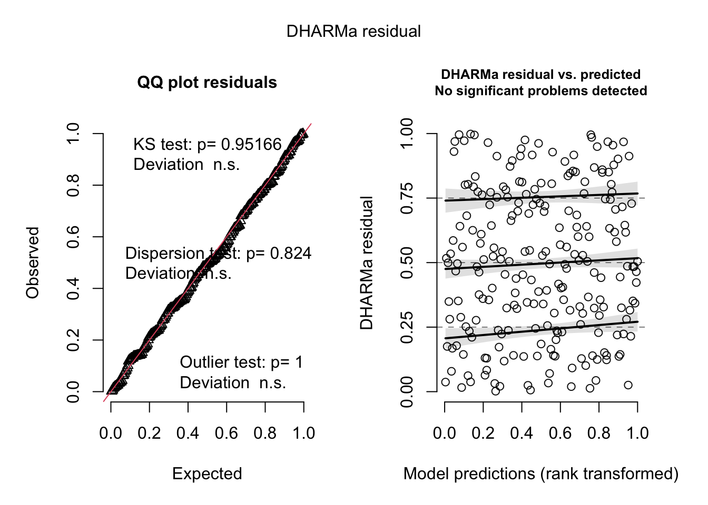
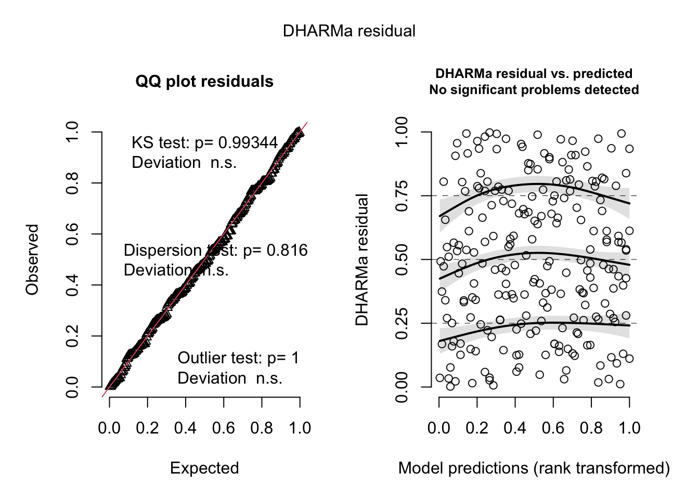
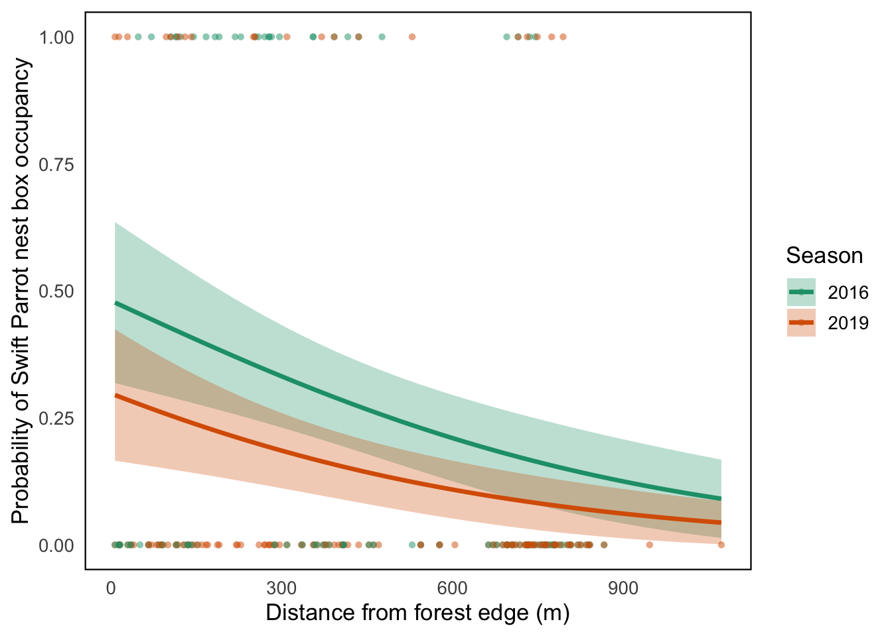

sst <- read_csv("../data/SST_update2023.csv")Final
[View the GitHub repository] (https://github.com/amitgold11/ENVS-193DS_spring-2025_final.git)
Problem 1. Research Writing
a. Transparent Statistical Methods
In part 1, they used a correlation test to check if there’s a relationship between how far something is from the headwater and how much nitrogen ends up in the water each year.
In part 2, they used a one-way ANOVA, which is a test that compares the average nitrogen load between different source types (like urban land, fertilizer, etc.).
b. More Information Needed
One thing that’s missing is follow-up comparisons to figure out which specific sources actually differ from each other. Without that, it’s hard to tell where the differences are coming from.
It would also help to include some summary stats—like the average and spread of nitrogen load for each source so we can better understand what’s going on beyond just the p-value.
c. Suggestions For Rewriting
Nitrogen load in the San Joaquin River Delta appears to be related to how far the site is from the headwater. As distance increases, nitrogen load tends to increase (correlation test: r = correlation coefficient, p = 0.03, α = significance level).
Nitrogen load varied depending on the source(such as urban land, atmospheric deposition, and fertilizer). A one-way ANOVA found significant differences between sources (ANOVA: F = test statistic, df = degrees of freedom, p = 0.02, α = significance level), but more information is needed, including post-hoc comparisons and group averages, to clarify which sources are actually different from each other.
Problem 2. Data Visualization
a. Cleaning and Summarizing
# Clean and summarize the SST data
sst_clean <- sst |>
mutate(date = ymd(date)) |> # Convert date column to Date class
mutate(
year = year(date), # Extract year from date
month = month(date, label = TRUE, abbr = TRUE) # Extract month as an ordered factor
) |>
filter(year >= 2018 & year <= 2023) |> # Keep only years 2018 through 2023
group_by(year, month) |> # Group by year and month
summarize(mean_monthly_sst = mean(temp, na.rm = TRUE)) |> # Calculate mean temp per group
ungroup() # Remove grouping
# Display a random sample of 5 rows
slice_sample(sst_clean, n = 5)# A tibble: 5 × 3
year month mean_monthly_sst
<dbl> <ord> <dbl>
1 2022 Jul 17.0
2 2019 Aug 17.0
3 2018 Sep 18.2
4 2021 Mar 12.6
5 2021 Jan 13.9# Display structure of cleaned data
str(sst_clean)tibble [72 × 3] (S3: tbl_df/tbl/data.frame)
$ year : num [1:72] 2018 2018 2018 2018 2018 ...
$ month : Ord.factor w/ 12 levels "Jan"<"Feb"<"Mar"<..: 1 2 3 4 5 6 7 8 9 10 ...
$ mean_monthly_sst: num [1:72] 15 14.3 13.5 12.8 13.6 ...b. Visualize The Data
# Convert year to factor so colors work correctly
sst_clean <- sst_clean |>
mutate(year = as.factor(year))
# Create the plot
ggplot(sst_clean, aes(x = month, y = mean_monthly_sst, group = year, color = year)) +
geom_line(linewidth = 1) + # Use linewidth for lines
geom_point(size = 2) + # Add points for each value
scale_color_viridis_d(begin = 0.1, end = 0.9, option = "C") + # Light → dark color gradient
labs(
x = "Month",
y = "Mean monthly sea surface temperature (°C)",
color = "Year"
) +
theme_minimal(base_size = 13) + # Clean theme
theme(
panel.border = element_rect(color = "black", fill = NA, linewidth = 0.8), # Border around panel
panel.grid = element_blank(), # Remove all gridlines
legend.position = c(0.1, 0.8), # Legend inside top-left corner
legend.background = element_rect(fill = "white", color = "black") # Boxed legend
)
Problem 3. Data Anaylsis
a. Response Variable
In this dataset, 1 means that a Swift Parrot occupied the nest box, and 0 means the nest box was not occupied by a Swift Parrot. This binary variable allows us to model presence/absence behavior in response to environmental predictors.
b. Purpose of Study
Swift Parrots are the target conservation species, while Common Starlings and Tree Martins are competitor species that may also use the boxes. The study is primarily concerned with whether the nest boxes are helping Swift Parrots, rather than just providing habitat for more common or competitive species.
c. Difference in “seasons”
The two “seasons” in the dataset are 2016 and 2019, representing two separate breeding seasons. They differ in both time and potentially environmental conditions, and comparing them allows researchers to see whether nest box use by Swift Parrots changes between years.
d. Table of Models
# Create a data frame with model information
model_table <- tribble(
~Model, ~Season, ~Distance_to_forest_edge, ~Description,
"1 (Null)", "Not included", "Not included", "Baseline model with intercept only",
"2 (Saturated)", "Included", "Included", "Full model with both season and distance predictors",
"3", "Included", "Not included", "Model with season as only predictor",
"4", "Not included", "Included", "Model with distance as only predictor"
)
# Display table nicely
knitr::kable(model_table, caption = "Table 1: Model structure for predicting Swift Parrot nest box occupancy")| Model | Season | Distance_to_forest_edge | Description |
|---|---|---|---|
| 1 (Null) | Not included | Not included | Baseline model with intercept only |
| 2 (Saturated) | Included | Included | Full model with both season and distance predictors |
| 3 | Included | Not included | Model with season as only predictor |
| 4 | Not included | Included | Model with distance as only predictor |
e. Run the Models
# Model 1: Null model (intercept only)
m1 <- glmmTMB(occupied ~ 1, data = nest_boxes, family = binomial)
# Model 2: Saturated model (season + distance)
m2 <- glmmTMB(occupied ~ season + distance, data = nest_boxes, family = binomial)
# Model 3: Season only
m3 <- glmmTMB(occupied ~ season, data = nest_boxes, family = binomial)
# Model 4: Distance only
m4 <- glmmTMB(occupied ~ distance, data = nest_boxes, family = binomial)f. Check The Diagnostics
# Load DHARMa
library(DHARMa)
# Simulate and plot residuals for each model
# Model 1
res1 <- simulateResiduals(m1)
plot(res1)
# Model 2
res2 <- simulateResiduals(m2)
plot(res2)
# Model 3
res3 <- simulateResiduals(m3)
plot(res3)
# Model 4
res4 <- simulateResiduals(m4)
plot(res4)
g. Select The Best Model
# Load MuMIn package
library(MuMIn)
# Compare AIC values for all models
aic_table <- AIC(m1, m2, m3, m4)
aic_table df AIC
m1 1 238.8140
m2 3 226.2057
m3 2 236.3208
m4 2 229.6180The best model as determined by Akaike’s Information Criterion (AIC) included both season and distance from forest edge as predictors. This model explains variation in Swift Parrot nest box occupancy using both the year of observation and how far the nest box is from the forest edge.
h. Visualize The Model Predictions
# Create new data frame for predictions
# Use a sequence of distances from 0 to max, for each season
newdata <- expand.grid(
distance = seq(min(nest_boxes$distance), max(nest_boxes$distance), length.out = 100),
season = levels(nest_boxes$season)
)
# Add predicted values + 95% confidence intervals
predictions <- predict(m2, newdata = newdata, type = "response", se.fit = TRUE)
newdata$fit <- predictions$fit
newdata$lower <- predictions$fit - 1.96 * predictions$se.fit
newdata$upper <- predictions$fit + 1.96 * predictions$se.fit
# Plot predictions + observed data
ggplot() +
# Underlying data
geom_point(data = nest_boxes, aes(x = distance, y = occupied, color = season), alpha = 0.5, shape = 16) +
# Confidence ribbon
geom_ribbon(data = newdata, aes(x = distance, ymin = lower, ymax = upper, fill = season), alpha = 0.3) +
# Prediction line
geom_line(data = newdata, aes(x = distance, y = fit, color = season), size = 1.2) +
labs(
x = "Distance from forest edge (m)",
y = "Probability of Swift Parrot nest box occupancy",
color = "Season",
fill = "Season"
) +
theme_minimal(base_size = 13) +
theme(
panel.grid = element_blank(), # Remove gridlines
panel.border = element_rect(color = "black", fill = NA, linewidth = 0.8)
) +
scale_color_brewer(palette = "Dark2") + # Custom colors
scale_fill_brewer(palette = "Dark2")
i. Write a Caption
Figure 1. Predicted Swift Parrot nest box occupancy by distance from forest edge and season. This figure shows the predicted probability of Swift Parrot nest box occupancy based on distance from the forest edge for the 2016 and 2019 breeding seasons. Lines represent model predictions from a logistic regression model, and shaded areas show 95% confidence intervals. Observed nest box occupancy (1 = occupied, 0 = not) is overlaid as semi-transparent points. Data source: Stojanovic et al. (2021), Dryad dataset https://doi.org/10.5061/dryad.83bk3j9sb
j. Calculate Model Predictions
# New data for specific predictions
pred_points <- expand.grid(
distance = c(0, 900),
season = levels(nest_boxes$season)
)
# Predict probability + standard error
pred_results <- predict(m2, newdata = pred_points, type = "response", se.fit = TRUE)
# Add predictions + 95% confidence intervals
pred_points$fit <- pred_results$fit
pred_points$lower <- pred_results$fit - 1.96 * pred_results$se.fit
pred_points$upper <- pred_results$fit + 1.96 * pred_results$se.fit
# Show the results
pred_points distance season fit lower upper
1 0 2016 0.48063714 0.32066019 0.6406141
2 900 2016 0.12478374 0.04187703 0.2076905
3 0 2019 0.29803163 0.16674790 0.4293154
4 900 2019 0.06139379 0.01282549 0.1099621k. Interpret Your Results
At 0 meters from the forest edge, Swift Parrots had a predicted occupancy probability of about 48% in 2016 and 30% in 2019. At 900 meters, those probabilities dropped significantly to around 12% in 2016 and 6% in 2019. This suggests that Swift Parrots are more likely to occupy nest boxes placed closer to the forest edge, and that occupancy was generally higher in 2016 than in 2019. These trends could reflect ecological preferences like needing access to forest resources, and the lower occupancy in 2019 might be due to changes in habitat quality, population size, or increased competition from other species.
Problem 4. Affective and Exploratory Visualizations
a. Comparing Visualizations
1. How are the visualizations different from each other in the way you have represented your data?
My exploratory visualizations from Homework 2 were structured, scientific, and focused on comparing variables like nitrogen levels, ground cover, and biomass across treatments and years. In contrast, my affective visualization from Homework 3 used mood ratings to represent a personal experience (reading environments), and the design prioritized approachability and emotional connection rather than just showing scientific trends.
2. What similarities do you see between all your visualizations?
Both sets of visualizations aimed to clearly communicate patterns and group differences. I consistently used color to distinguish between groups and included readable axis labels. I also tried to keep the formatting clean and easy to interpret.
3. What patterns do you see in each visualization? Are these different between visualizations? If so, why?
In Homework 2, I saw differences in biomass over time and across treatments, and patterns in nitrogen data depending on site and method. In Homework 3, I noticed that my mood tended to be higher in quiet environments. The data patterns were different because the goals were different. Homework 2 focused on environmental effects in a field experiment, while Homework 3 reflected my personal experience and subjective ratings.
4. What feedback did you get, and how did you respond?
One suggestion I got was to make sure my axis labels were clear and to adjust the sizing of text and legends for readability. I took that into account by increasing font size in Homework 3 and making sure each environment label on the x-axis was legible, even with longer category names.
b. Sharing Your Affective Visualization
In-class portion.